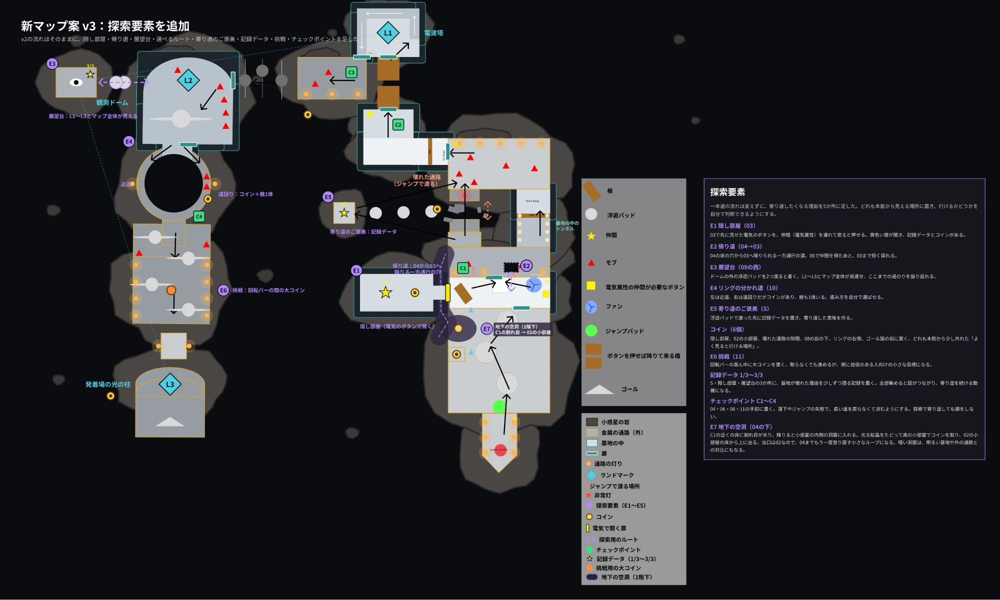
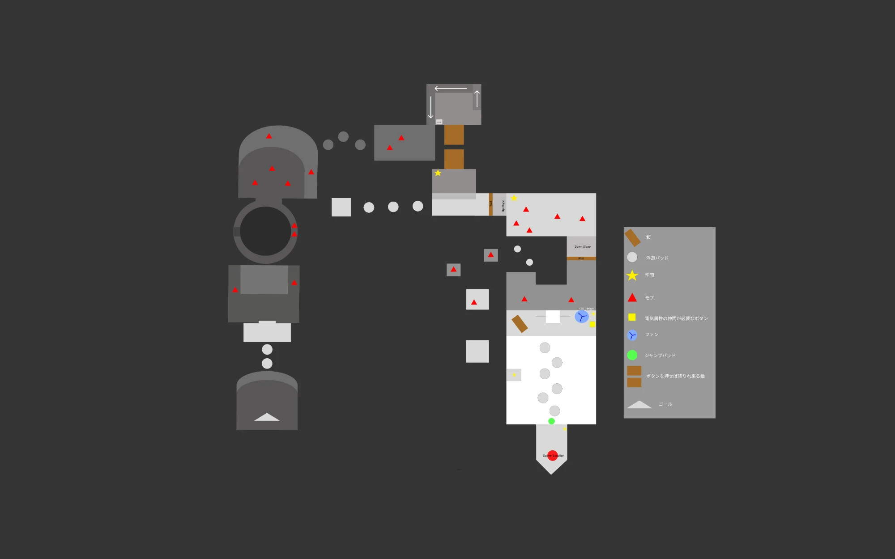
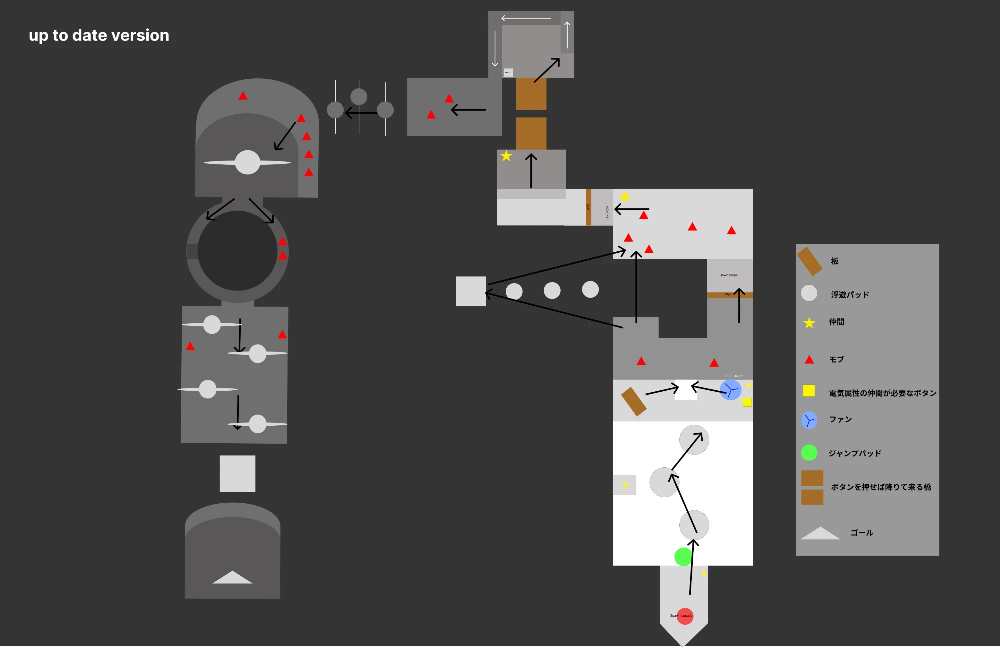
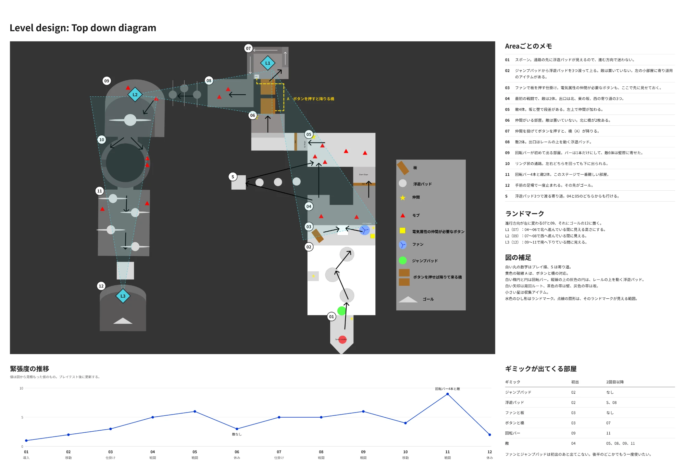
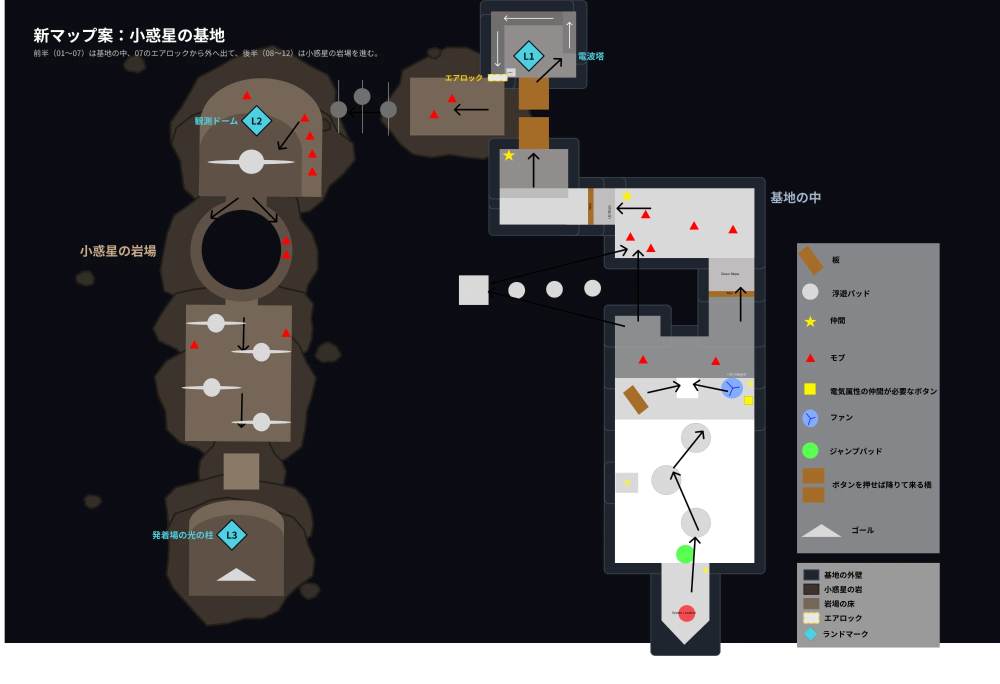
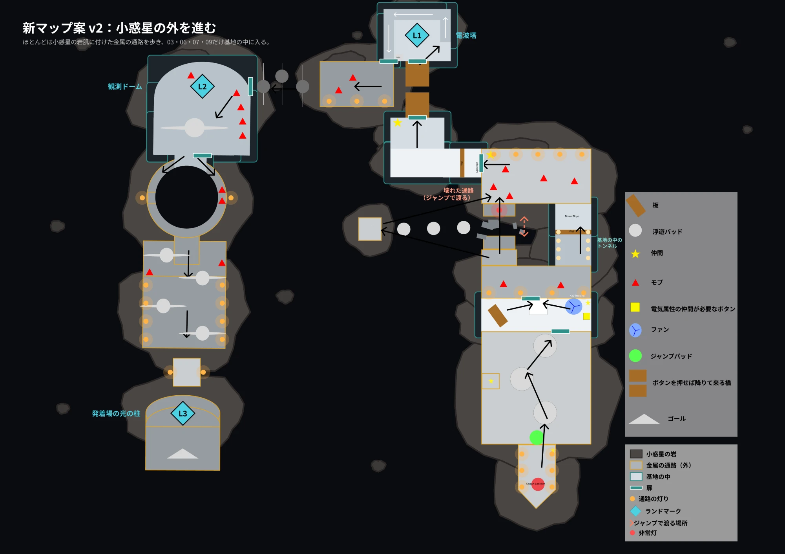

制作中In development
Chaotic Journey(仮) (working title)

- レベル設計(Figmaでのトップダウン図、進行ルート・ランドマーク・緊張度の設計)
- Unreal Engine 5でのブロックアウト
- ギミックの実装(Blueprint)
- 環境アセットの配置・調整
- Level design — top-down diagrams in Figma, critical path, landmarks, and tension curve
- Blockout in Unreal Engine 5
- Gimmick implementation in Blueprint
- Placing and tuning environment assets
小惑星に建設された基地を抜けて、終点の発着場をめざす三人称視点のアクション・パズルです。プレイヤーは仲間を救出し、仲間を「持つ・投げる・召喚する」ことで障害や仕掛けを突破します。足場渡り、戦闘、ルート選択を組み合わせ、周囲を観察して進み方を考えてもらうレベルを目指しています。
A third-person action-puzzle level set in a base built on an asteroid, where the goal is to reach the launch pad at the far end. The player rescues companions, then carries, throws, and summons them to get past obstacles and mechanisms. Platforming, combat, and route choice are combined so that players read the space and work out how to move through it.
設計のポイントDesign Decisions
基地の中を進むルートを、どの順番で何を体験させるかから組み立てています。
The route through the base is built around what the player should experience, and in what order.
-
基本操作から応用へFrom basics to combinations
序盤で足場渡りや仕掛けに一つずつ触れ、後半で戦闘や複数の要素を組み合わせる構成にしています。
Early rooms introduce platforming and mechanisms one at a time; later rooms combine them with combat.
-
リスクの異なる分岐Routes with different risks
リング状の通路では、敵がいる側と、壊せる障害物がある側に道を分け、どちらを通るかをプレイヤーに選ばせます。
The ring corridor splits into a side guarded by enemies and a side blocked by breakable obstacles, and the player chooses which to take.
-
危険を引き受ける寄り道Optional detours with risk
浮遊パッドで渡る脇道を設け、リスクを取って探索する選択肢を用意しています。
A side path across floating pads gives players the option to take a risk in exchange for exploration.
-
ランドマークで位置を伝えるLandmarks for orientation
電波塔(L1)、観測ドーム(L2)、発着場の光の柱(L3)を、離れた区画からも見える目印として配置しています。
A radio tower (L1), an observation dome (L2), and the launch pad's pillar of light (L3) are placed so they can be seen from distant areas.
-
屋内と屋外の切り替えAlternating inside and outside
宇宙に開けた外部デッキと基地内部を交互に通り、景観と空間の圧迫感に変化をつけています。
The route alternates between open decks facing space and the enclosed base, varying both the view and how confined the space feels.
-
緊張度を図で管理するPlanning the tension curve
エリア01〜12ごとに緊張度を数値にしてグラフ化しました。戦闘が続いた後に休める区画(06)を挟み、終盤の回転バーの難所(11)を山場にしています。
Each of areas 01–12 has a tension score on a chart. A rest area (06) follows the opening fights, and the rotating-bar gauntlet (11) is the peak near the end.
マップの変遷How the Map Evolved
Figmaのトップダウン図を、部屋の配置から進行・分析・テーマ・探索要素の順に描き直してきました。画像はクリックで拡大できます。
The top-down diagram in Figma was redrawn in stages: room layout, then flow, analysis, theme, and exploration. Click any image to enlarge it.





動作確認と修正Checks & Fixes
現時点では、私自身による動作確認と技術的なチェックの結果です。第三者によるプレイテストはこれから行います。
So far these come from my own playthroughs and technical checks. Playtests with other players are still to come.
- 操作の整理Controls 持った物を置く操作と投げる操作が混同されていたため、Eで置く・Bで投げる操作に分けました。 Putting down and throwing a held object were easy to confuse, so I split them: E to put down, B to throw.
- 投げる方向Throw aim 投げる方向をカメラの向きに合わせ、予測軌道を表示する実装を進めています。 Throws now follow the camera direction, and I am implementing a predicted trajectory line.
- 意図しない近道Unintended shortcut リング中央に旧通路の床が残り、分岐を通らずに近道できる箇所が見つかったため、接続部分を短くしました。 Floor left over from an old corridor in the middle of the ring let players skip the branch, so I shortened the connecting section.
- 基本動作Basics Play起動、開始地点への出現、主要な床と穴の当たり判定を確認しました。全ルートの通しプレイと落下後の復帰は今後確認します。 Verified play start, spawning at the start point, and collision on the main floors and pits. A full run of every route and recovery after falling are still to be checked.
次は、初めて遊ぶプレイヤーが「次の目的地」「操作できる物」「分岐のリスク」をどう理解するかを観察し、誘導と配置を調整する予定です。
Next, I will watch first-time players to see how they read the next destination, what they can interact with, and the risk of each branch, then adjust guidance and placement.
外部アセット・ライセンスExternal Assets & Licences
- Stack O Bot — Epic Games Epic Gamesのサンプルプロジェクト。キャラクター、基本システム、一部の環境とギミックに使用しています。 An Epic Games sample project, used for the character, core systems, and some environment pieces and mechanisms.
- RP_Vol_01 小惑星の岩のアセットとして使用しています。 Used for the asteroid rocks.
- ModularScifiHallways (StarterBundle) SFの通路・設備のアセットとして使用しています。 Used for the sci-fi corridors and fixtures.
これらの外部アセットは中島悠成が制作したものではありません。私はレベルの設計、ブロックアウト、ギミックの実装、アセットの配置と調整を担当しています。
These third-party assets were not created by Yusei Nakajima. My work is the level design, blockout, gimmick implementation, and the placement and tuning of these assets.